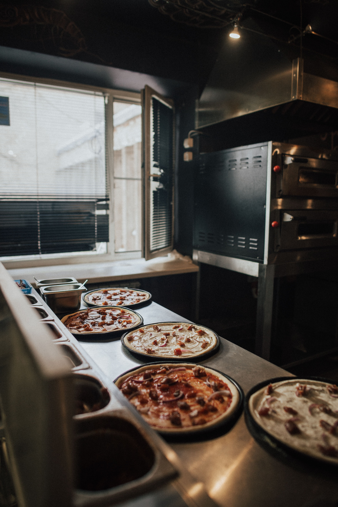

Some places sell you only food, and others sell you food and a good experience. Either way, every restaurant you've ever eaten at — from the corner takeaway to the mall franchise — runs on real numbers most diners never see.
The South African foodservice market is expected to reach $17.22 billion (R278.13 billion) by 2029, according to Mordor Intelligence. Fast food alone is expected to hit $4.9 billion (R85 billion) this year, per an Allied Market Research report.
What It Costs to Run Your Own Restaurant
Small Café
R80K–R150KBasic equipment, simple décor.
Takeaway Outlet
R150K–R300KFryers, grills, branding.
Ghost Kitchen
R200K–R600KDelivery-only, no dining room.
Casual Sit-Down
R800K–R1.8MFull service, no frills.
Full Sit-Down + Liquor
R500K–R1.5M+Plus furniture and staff.
Fine Dining
R5M+The top of the market.
What It Costs to Run a Franchise
Some entrepreneurs avoid the risk that comes with starting a unique brand and elect to buy into an established one instead. It's often more expensive and more restrictive — every South African franchise agreement is layered into three separate costs:
The Initial Franchise Fee — a one-time payment for the right to use the brand name and benefit from its recognition.
The Total Establishment Cost — covers the build, equipment, signage, and opening stock.
Royalty & Management Fees — typically a percentage of monthly turnover, paid for the life of the franchise.
Here's what it looks like to buy into some of South Africa's best-known franchises, using information from BusinessTech, Entrepreneur Hub SA, and SME South Africa:
| Franchise | Franchise Fee | Total Investment | Monthly Royalty |
|---|---|---|---|
| Nando's | ~R250,000 (+R37,500 application) | R5.47m (inline) – R6.94m (drive-thru) | 7% of net sales |
| Steers | R68,000 (inline) / R75,000 (drive-thru) | R1.97m (inline) – R3.75m (drive-thru) | 11% of net sales |
| Debonairs Pizza | R50,000–R68,000 | R2.05m (express) – R2.38m (mall) | 11–12% of net sales |
| Chicken Licken | Not publicly disclosed | From ~R4.8m | Not publicly disclosed |
| RocoMamas | Included in total investment | R4m+ (incl. ~R2.4m unencumbered cash) | Not publicly disclosed |
| Roman's Pizza | R90,000 | ~R2.3m (120m² store) | Not publicly disclosed |
| McDonald's | Not publicly disclosed | From ~R4m | Not publicly disclosed |
Leading Franchises, By Store Count
- KFC — 1,057 stores (up from 925 the year prior)
- Debonairs Pizza — 710 stores
- Steers — 652 stores
- Wimpy — 458 stores
- Nando's — 302 stores
- Chicken Licken — 286 stores
- Roman's Pizza — 250 stores
At the end of the day, business is risky and expensive. We'd advise weighing your options, understanding the pros and cons of each venture, and being honest about whether it's something you can actually commit to.
Sources: Mordor Intelligence · Allied Market Research · 2025 iKhokha guide · 2026 ASC Food Safety guide · BusinessTech · Entrepreneur Hub SA · SME South Africa